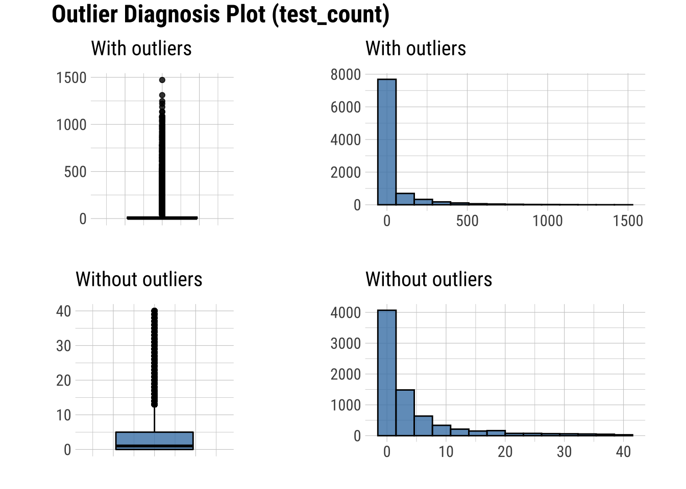

# Sets the repository to download packages from
options(repos = list(CRAN = "http://cran.rstudio.com/"))
# Sets the number of significant figures to two - e.g., 0.01
options(digits = 2)
# Required package for quick package downloading and loading
install.packages("pacman")
# Downloads and load required packages
pacman::p_load(dlookr, # Exploratory data analysis
formattable, # HTML tables from R outputs
here, # Standardizes paths to data
kableExtra, # Alternative to formattable
knitr, # Needed to write HTML reports
missRanger, # To generate NAs
tidyverse) # Powerful data wrangling package suiteExploratory Data Analysis in R - Diagnosing like a Data Doctor
Purpose of workshop
Exploring a novel data set and produce publication quality tables and reports
Objectives
- Load and explore a data set with publication quality tables
- Diagnose outliers and missing values in a data set
- Prepare an HTML summary report showcasing properties of a data set
Required Setup
We first need to prepare our environment with the necessary packages
Load and Examine a Data Set
- Load data and view
- Examine columns and data types
- Define box plots
- Describe meta data
We will be using open source data from UArizona researchers for Test, Trace, Treat (T3) efforts offers two clinical diagnostic tests (Antigen, RT-PCR) to determine whether an individual is currently infected with the COVID-19 virus. (Merchant et al. 2022)
# Let's load a data set from the COVID-19 daily testing data set
dataset <- read.csv(here("Data7_EDA_In_R_Book", "data", "daily_summary.csv"))
# What does the data look like?
dataset |>
head() |>
formattable()| result_date | affil_category | test_type | test_result | test_count | test_source |
|---|---|---|---|---|---|
| 2020-08-04 | Employee | Antigen | Negative | 5 | Campus Health |
| 2020-08-04 | Employee | Antigen | Positive | 0 | Campus Health |
| 2020-08-04 | Employee | Antigen | Negative | 1 | Test All Test Smart |
| 2020-08-04 | Employee | Antigen | Positive | 0 | Test All Test Smart |
| 2020-08-04 | Off-Campus Student | Antigen | Negative | 9 | Campus Health |
| 2020-08-04 | Off-Campus Student | Antigen | Positive | 1 | Campus Health |
Diagnose your Data
# What are the properties of the data
dataset |>
diagnose() |>
formattable()| variables | types | missing_count | missing_percent | unique_count | unique_rate |
|---|---|---|---|---|---|
| result_date | character | 0 | 0 | 541 | 0.05893 |
| affil_category | character | 0 | 0 | 4 | 0.00044 |
| test_type | character | 0 | 0 | 3 | 0.00033 |
| test_result | character | 0 | 0 | 3 | 0.00033 |
| test_count | integer | 0 | 0 | 591 | 0.06438 |
| test_source | character | 0 | 0 | 2 | 0.00022 |
variables: name of each variabletypes: data type of each variablemissing_count: number of missing valuesmissing_percent: percentage of missing valuesunique_count: number of unique valuesunique_rate: rate of unique value - unique_count / number of observations
Summary Statistics of your Data
Numerical Variables
# Summary statistics of our numerical columns
dataset |>
diagnose_numeric() |>
formattable()| variables | min | Q1 | mean | median | Q3 | max | zero | minus | outlier |
|---|---|---|---|---|---|---|---|---|---|
| test_count | 0 | 0 | 47 | 2 | 16 | 1472 | 2777 | 0 | 1721 |
min: minimum valueQ1: 1/4 quartile, 25th percentilemean: arithmetic mean (average value)median: median, 50th percentileQ3: 3/4 quartile, 75th percentilemax: maximum valuezero: number of observations with the value 0minus: number of observations with negative numbersoutlier: number of outliers
Outliers
Values outside of \(1.5 * IQR\)

There are several numerical variables that have outliers above, let’s see what the data look like with and without them
Create a table with columns containing outliers
Plot outliers in a box plot and histogram
# Table showing outliers
diagnose_outlier(dataset) |>
filter(outliers_ratio > 0) |>
formattable()| variables | outliers_cnt | outliers_ratio | outliers_mean | with_mean | without_mean |
|---|---|---|---|---|---|
| test_count | 1721 | 19 | 231 | 47 | 4.3 |
outliers_cnt: number of outliersoutliers_ratio: ratio of outliers over all valuesoutliers_mean: arithmetic mean (average value) of outlier valueswith_mean: arithmetic mean of all values including outlierswithout_mean: arithmetic mean of all values excluding outliers
# Selecting desired columns
dataset |>
plot_outlier()
Missing Values (NAs)
- Table showing the extent of NAs in columns containing them
- Plot showing the frequency of missing values
# Create the NA table
dataset |>
generateNA(p = 0.3) |>
plot_na_pareto(only_na = TRUE, plot = FALSE) |>
formattable() # Publishable table| variable | frequencies | ratio | grade | cumulative |
|---|---|---|---|---|
| affil_category | 2754 | 0.3 | Bad | 17 |
| result_date | 2754 | 0.3 | Bad | 33 |
| test_count | 2754 | 0.3 | Bad | 50 |
| test_result | 2754 | 0.3 | Bad | 67 |
| test_source | 2754 | 0.3 | Bad | 83 |
| test_type | 2754 | 0.3 | Bad | 100 |
# Plot the intersect of the columns with the most missing values
# This means that some combinations of columns have missing values in the same row
dataset |>
generateNA(p = 0.3) |>
select(test_type, test_result, test_count) |>
plot_na_intersect(only_na = TRUE) 
Categorical Variables
# Diagnose our categorical columns
dataset |>
diagnose_category() |>
formattable()| variables | levels | N | freq | ratio | rank |
|---|---|---|---|---|---|
| result_date | 2020-09-17 | 9180 | 26 | 0.283 | 1 |
| result_date | 2020-09-23 | 9180 | 26 | 0.283 | 1 |
| result_date | 2020-10-01 | 9180 | 26 | 0.283 | 1 |
| result_date | 2020-10-08 | 9180 | 26 | 0.283 | 1 |
| result_date | 2020-09-01 | 9180 | 25 | 0.272 | 5 |
| result_date | 2020-09-16 | 9180 | 25 | 0.272 | 5 |
| result_date | 2020-09-24 | 9180 | 25 | 0.272 | 5 |
| result_date | 2020-12-09 | 9180 | 25 | 0.272 | 5 |
| result_date | 2020-12-15 | 9180 | 25 | 0.272 | 5 |
| result_date | 2020-09-04 | 9180 | 24 | 0.261 | 10 |
| affil_category | Off-Campus Student | 9180 | 3368 | 36.688 | 1 |
| affil_category | Employee | 9180 | 2987 | 32.538 | 2 |
| affil_category | On-Campus Student | 9180 | 2823 | 30.752 | 3 |
| affil_category | Other | 9180 | 2 | 0.022 | 4 |
| test_type | Antigen | 9180 | 4624 | 50.370 | 1 |
| test_type | PCR | 9180 | 4554 | 49.608 | 2 |
| test_type | Antibody | 9180 | 2 | 0.022 | 3 |
| test_result | Negative | 9180 | 4575 | 49.837 | 1 |
| test_result | Positive | 9180 | 4575 | 49.837 | 1 |
| test_result | Inconclusive | 9180 | 30 | 0.327 | 3 |
| test_source | Test All Test Smart | 9180 | 5078 | 55.316 | 1 |
| test_source | Campus Health | 9180 | 4102 | 44.684 | 2 |
variables: category nameslevels: group names within categoriesN: number of observationfreq: number of observation at group level / number of observation at category levelratio: percentage of observation at group level / number of observation at category levelrank: rank of the occupancy ratio of levels (order in which the groups are in the category)
Produce an HTML Summary of a Data Set
# Remove the '#' below to reproduce an HTML from an R script.
#diagnose_web_report(dataset)
Merchant, Nirav C, Jim Davis, George H Franks, Chun Ly, Fernando Rios, Todd Wickizer, Gary D Windham, and Michelle Yung. 2022. “University of Arizona Test-Trace-Treat COVID-19 Testing Results.” University of Arizona Research Data Repository. https://doi.org/10.25422/AZU.DATA.14869740.V3.